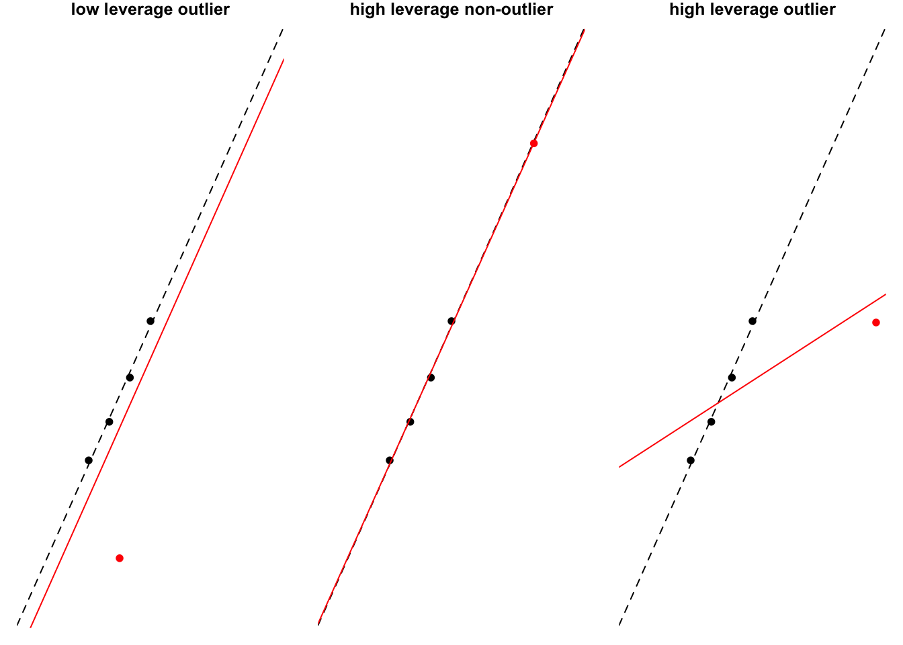
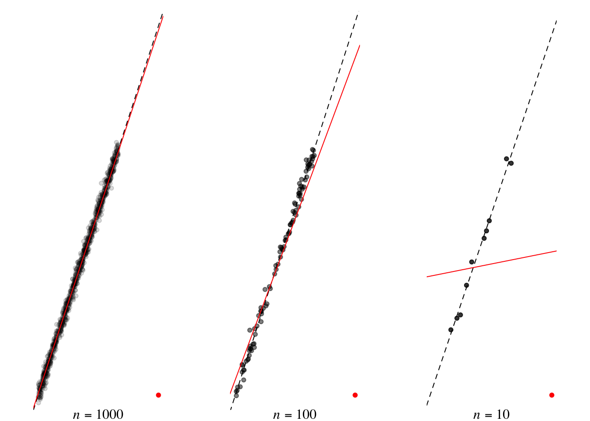
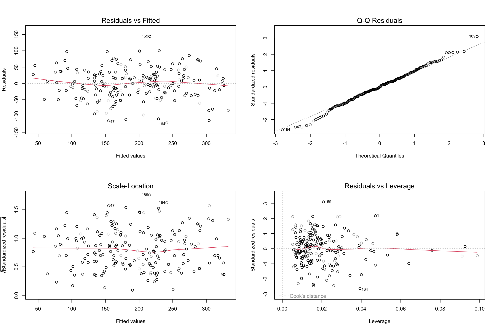

Multiple lineare Regression
Die multiple lineare Regression ist eine Erweiterung der einfachen linearen Regression auf Situationen mit mehreren Prädiktoren. Das grundlegende Konzept bleibt aber unverändert, wir verwenden nach wie vor folgende allgemeine Modellgleichung:
\[y_i = \hat{y}_i + \varepsilon_i\]
Das Modell \(\hat{y}_i\) mit \(n\) Prädiktoren \(x_{1}\), \(x_{2}\), \(\ldots\), \(x_{n}\) wird nun wie folgt formuliert:
\[y_i = (b_0 + b_1 x_{1i} + b_2 x_{2i} + \ldots + b_n x_{ni}) + \varepsilon_i\]
Jeder Prädiktor erhält also ein eigenes Gewicht bzw. einen eigenen Regressionskoeffizienten. Die Koeffizienten werden mittels Least Squares wieder so berechnet, dass die entstehende “Gerade” (technisch spricht man hier von einer Hyperebene) den mittleren quadratischen Fehler minimiert.
Die Quadratsummen SST, SSM und SSR werden analog wie bei der einfachen Regression berechnet. Wieder kann man \(R^2\) berechnen, welches den Anteil der Varianz in der abhängigen Variable angibt, welche durch das Modell erklärt wird. Je höher dieser Wert ist, desto besser kann das Modell die Daten beschreiben. Aus \(R^2\) kann man hier die Pearson-Korrelation zwischen den vorhergesagten Werten und den tatsächlich beobachteten Werten berechnen.
Überprüfen der Datenpunkte
Ein gegebenes Modell sollte man immer darauf überprüfen, wie gut es die gemessenen Daten tatsächlich beschreibt. Lineare Modelle können sehr sensitiv auf einzelne Datenpunkte reagieren, wenn diese nicht zum generellen (linearen) Trend der Daten passen. Einen tatsächlichen Einfluss auf das Modell üben solche Ausreißer aber nur aus, wenn sie weit weg vom Mittelwert der Prädiktoren liegen – man bezeichnet diesen potentiellen Einfluss jedes Datenpunkts als Leverage.
Kritisch sind also jene Punkte, welche einen potentiellen hohen Einfluss haben (hohe Leverage) und gleichzeitig nicht zum generellen Trend der Daten passen, also Ausreißer sind. Die folgende Grafik veranschaulicht die drei möglichen Situationen. Dabei sind die vier Ausgangsdatenpunkte schwarz dargestellt und die zugehörige Regressionsgerade ist schwarz strichliert. Der zusätzliche fünfte Datenpunkt ist rot dargestellt, und die Regressionsgerade durch alle fünf Datenpunkte ist ebenfalls rot. Durch einen einzigen zusätzlichen Datenpunkt ändert sich also das ursprüngliche Modell mehr oder weniger stark (von schwarz strichliert auf rot durchgezogen).
Je weniger Datenpunkte vorhanden sind, desto größer ist der Einfluss von Ausreißern auf das lineare Modell. Die folgende Grafik veranschaulicht die Auswirkung eines Ausreißers für drei verschiedene Stichprobengrößen. Man erkennt, dass ein Ausreißer das Modell nur wenig verändert, wenn sehr viele Datenpunkte vorhanden sind. Wenn es aber nur wenige Datenpunkte gibt, kann ein einziger Ausreißer das Modell stark verändern.

Modellannahmen
Um mit einem linearen Regressionsmodell Vorhersagen auf ungesehene Daten machen zu können, müssen folgende Annahmen erfüllt sein:
Die abhängige Variable muss intervallskaliert sein.
Die unabhängigen Variablen (Prädiktoren) müssen intervallskaliert (oder nominalskaliert in zwei Kategorien) sein.
Die Prädiktoren müssen Varianzen ungleich 0 haben (sie dürfen also nicht konstant sein).
Es darf keine Multikollinearität bestehen, d.h. zwei oder mehrere Prädiktoren dürfen nicht linear voneinander abhängig sein. Dies kann z.B. mit der VIF-Statistik (Variance Inflation Factor) überprüft werden.
Homoskedastizität, d.h. die Varianz der Residuen muss konstant über die Werte der Prädiktoren sein (Varianzhomogenität).
Die Residuen müssen normalverteilt sein (dies ist insbesondere für kleine Stichproben wichtig).
WichtigDiese Voraussetzung der Normalverteilung gilt für die Residuen und nicht für die Prädiktoren!
Die Residuen müssen unabhängig voneinander sein (kann z.B. mit dem Durbin-Watson-Test überprüft werden).
Die Beziehung zwischen unabhängigen Variablen und abhängiger Variable muss linear sein.
Beispiel
Im folgenden Beispiel sehen wir uns wieder die Anzahl der Verkäufe von Musikalben in Abhängigkeit der Höhe des Werbebudgets an. Zusätzlich gibt es jetzt aber zwei weitere Prädiktoren, nämlich die Anzahl an Airplay-Stunden im größten nationalen Radiosender und die Attraktivität der Bandmitglieder. Wir beginnen mit dem Laden der Daten sales2.dat:
library(readr)
album2 = read_tsv("sales2.dat")Berechnen wir nun ein lineares Regressionsmodell. Als Vergleichsmodell führen wir zuerst eine einfache Regression mit dem einzigen Prädiktor Werbebudget durch:
model1 = lm(sales ~ adverts, data=album2)Zusätzliche Faktoren kann man nun in einem zweiten Modell einfach durch den +-Operator hinzufügen:
model2 = lm(sales ~ adverts + airplay + attract, data=album2)Anschließend können wir uns die zusammengefassten Ergebnisse der beiden Modelle anzeigen lassen:
summary(model1)
Call:
lm(formula = sales ~ adverts, data = album2)
Residuals:
Min 1Q Median 3Q Max
-152.949 -43.796 -0.393 37.040 211.866
Coefficients:
Estimate Std. Error t value Pr(>|t|)
(Intercept) 1.341e+02 7.537e+00 17.799 <2e-16 ***
adverts 9.612e-02 9.632e-03 9.979 <2e-16 ***
---
Signif. codes: 0 '***' 0.001 '**' 0.01 '*' 0.05 '.' 0.1 ' ' 1
Residual standard error: 65.99 on 198 degrees of freedom
Multiple R-squared: 0.3346, Adjusted R-squared: 0.3313
F-statistic: 99.59 on 1 and 198 DF, p-value: < 2.2e-16summary(model2)
Call:
lm(formula = sales ~ adverts + airplay + attract, data = album2)
Residuals:
Min 1Q Median 3Q Max
-121.324 -28.336 -0.451 28.967 144.132
Coefficients:
Estimate Std. Error t value Pr(>|t|)
(Intercept) -26.612958 17.350001 -1.534 0.127
adverts 0.084885 0.006923 12.261 < 2e-16 ***
airplay 3.367425 0.277771 12.123 < 2e-16 ***
attract 11.086335 2.437849 4.548 9.49e-06 ***
---
Signif. codes: 0 '***' 0.001 '**' 0.01 '*' 0.05 '.' 0.1 ' ' 1
Residual standard error: 47.09 on 196 degrees of freedom
Multiple R-squared: 0.6647, Adjusted R-squared: 0.6595
F-statistic: 129.5 on 3 and 196 DF, p-value: < 2.2e-16Da das erste Modell identisch mit jenem aus der vorigen Einheit ist, kennen wir die Ergebnisse bereits. Wenden wir uns daher dem zweiten Modell zu. \(R^2\) ist hier 0.6647, das heißt das Modell kann nun 66% der Varianz erklären. Im Vergleich zum ersten Modell mit nur einem Prädiktor ist das eine Steigerung um 33%, d.h. die beiden Prädiktoren Airplay und Attraktivität können zusätzliche Varianz im Ausmaß von 33% erklären.
Die Regressionskoeffizienten werden ebenfalls in der Ausgabe dargestellt. Wir können daher das lineare Modell wie folgt schreiben:
\[y = b_0 + b_1 x_1 + b_2 x_2 + b_3 x_3 = -26.613 + 0.085 \cdot x_1 + 3.367 \cdot x_2 + 11.086 \cdot x_3\]
Hier stehen \(b_0\) für den Intercept (d.h. jener Wert von \(y\), wenn alle Prädiktoren 0 sind), \(b_1\) für das Werbebudget adverts, \(b_2\) für die Airplay-Stunden airplay und \(b_3\) für die Attraktivität attract.
Die Regressionskoeffizienten geben Auskunft, um wie viel sich die abhängige Variable ändert, wenn man einen Prädiktor um eine Einheit erhöht und dabei alle anderen Prädiktoren konstant hält. Dies bedeutet im Beispiel:
- Wenn
advertsum eine Einheit erhöht wird, dann erhöht sichsalesum 0.085 Einheiten. D.h. wenn man 1000 EUR mehr für Werbung ausgibt, verkauft man um 85 Alben mehr. - Wenn
airplayum eine Einheit erhöht wird, dann erhöht sichsalesum 3.37 Einheiten. D.h. wenn man das Album um eine Stunde mehr im Radio spielt, verkauft man um 3367 Alben mehr. - Wenn
attractum eine Einheit erhöht wird, dann erhöht sichsalesum 11.086 Einheiten (d.h. 11086 zusätzliche Alben).
Für jeden Regressionskoeffizienten wird ein \(t\)-Test gerechnet, welcher angibt, ob sich der Koeffizient signifikant von 0 unterscheidet (d.h. ob er signifikant zum Modell beiträgt). Die Größe der \(t\)-Statistik lässt auf den Einfluss der Koeffizienten schließen, d.h. adverts und airplay haben einen ähnlich großen Einfluss auf das Modell, wo hingegen attract einen geringeren Einfluss hat.
Oft ist es hilfreich, nicht nur die Regressionskoeffizienten zu analysieren, sondern auch die standardisierten Regressionskoeffizienten. Diese kann man berechnen, in dem man zuerst alle Variablen standardisiert und danach das lineare Modell berechnet. Standardisierte Variablen haben einen Mittelwert von 0 und eine Standardabweichung von 1. Man könnte die Standardisierung daher relativ einfach selbst vornehmen, in dem man für jede Variable zuerst deren Mittelwert subtrahiert und danach durch deren Standardabweichung dividiert.
Tipp
Die Funktion scale() kann verwendet werden, um die Spalten eine Data Frames zu standardisieren. Diese liefert aber immer eine Matrix zurück, d.h. wenn man ein Data Frame bzw. Tibble standardisieren möchte, muss man danach noch as.data.frame() bzw. tibble::as_tibble() anwenden.
Alternativ kann man dazu auch nachträglich die Funktion lm.beta() aus dem lm.beta-Paket benutzen:
library(lm.beta)
lm.beta(model2)
Call:
lm(formula = sales ~ adverts + airplay + attract, data = album2)
Standardized Coefficients::
(Intercept) adverts airplay attract
NA 0.5108462 0.5119881 0.1916834 Die standardisierten Regressionskoeffizienten werden üblicherweise mit \(\beta_i\) bezeichnet. Da alle Variablen nun in Standardabweichungen gemessen werden, kann man diese direkt miteinander vergleichen. Man sieht im Beispiel also:
- Wenn
advertsum eine Standardabweichung erhöht wird (485655 EUR), dann erhöht sichsalesum 0.511 Standardabweichungen (41240 Alben). - Wenn
airplayum eine Standardabweichung erhöht wird (12.270), dann erhöht sichsalesum 0.512 Standardabweichungen (41320 Alben). - Wenn
attractum eine Standardabweichung erhöht wird (1.395), dann erhöht sichsalesum 0.192 Standardabweichungen (15490 Alben).
Konfidenzintervalle für die (nicht standardisierten) Regressionskoeffizienten erhält man mit der Funktion confint() (standardmäßig werden 95%-Intervalle berechnet):
confint(model2) 2.5 % 97.5 %
(Intercept) -60.82960967 7.60369295
adverts 0.07123166 0.09853799
airplay 2.81962186 3.91522848
attract 6.27855218 15.89411823Zwei (oder mehrere) Modelle können mit der \(F\)-Statistik verglichen werden. Der \(F\)-Wert, der bei der zusammenfassenden Beschreibung eines Modells angezeigt wird, vergleicht das Modell standardmäßig mit dem einfachsten Mittelwertmodell. Möchte man das Modell mit einem anderen Modell vergleichen, ist zu beachten, dass model2 eine Erweiterung von model1 sein muss, d.h. model2 muss alle Terme von model1 beinhalten plus eventuelle zusätzliche Faktoren. In R gibt man hier folgenden Befehl ein:
anova(model1, model2)Analysis of Variance Table
Model 1: sales ~ adverts
Model 2: sales ~ adverts + airplay + attract
Res.Df RSS Df Sum of Sq F Pr(>F)
1 198 862264
2 196 434575 2 427690 96.447 < 2.2e-16 ***
---
Signif. codes: 0 '***' 0.001 '**' 0.01 '*' 0.05 '.' 0.1 ' ' 1Der \(F\)-Wert beträgt also 96.447 und ist signifikant, d.h. das zweite Modell ist signifikant besser als das erste.
Datenpunkte mit großem Einfluss
Um die diversen Ausreißerstatistiken für jeden einzelnen Wert übersichtlich beurteilen zu können, kann man die Werte mit folgenden Funktionen berechnen:
resid(): Residuenrstandard(): Standardisierte Residuenrstudent(): Studentisierte Residuen (berechnet mit Leave-One-Out)hatvalues(): Leveragedfbeta(): Unterschied der Regressionskoeffizienten mittels Leave-One-Outcooks.distance(): Cook’s Distanzdffits(): Unterschied im vorhergesagtem Wert mittels Leave-One-Out
Hinweis
“Leave-One-Out” bedeutet, dass der jeweilige Datenpunkt aus der Berechnung des Werts ausgeschlossen wird.
Sehr praktisch ist die Funktion influence.measures(), welche mehrere Ausreißerstatistiken für jeden Datenpunkt übersichtlich aufbereitet ausgibt.
influence.measures(model2)Modellannahmen
Multikollinearität kann mit der VIF-Statistik beurteilt werden; in R kann man dazu die Funktion vif() aus dem car-Paket verwenden.
library(car)
vif(model2) adverts airplay attract
1.014593 1.042504 1.038455 Der größte VIF-Wert sollte nicht größer als 10 sein (für einen konservativeren Schwellwert kann man auch 5 benutzen). Der durchschnittliche VIF sollte nicht wesentlich größer als 1 sein, was man wie folgt überprüfen kann:
mean(vif(model2))[1] 1.03185Wenn man den plot()-Befehl auf das Modell anwendet, werden vier diagnostische Plots erstellt.
par(mfrow=c(2, 2), cex=0.75)
plot(model2)
Im Plot links oben sind die vorhergesagten Werte gegen die Residuen aufgetragen. Hier kann man die Linearitätsannahme (die rote Linie sollte immer ungefähr gleich Null sein) sowie die Homoskedastizitätsannahme (die Streuung der Datenpunkte sollte sich entlang der x-Achse nicht ändern) überprüfen. Der Plot links unten ist ähnlich, nur ist hier statt den (absoluten) Residuen die Wurzel aus dem Betrag der standardisierten Residuen aufgetragen. Auch hier lässt sich beurteilen, ob die Annahme der Varianzhomogenität erfüllt ist oder nicht. Im Plot rechts oben lässt sich die Normalverteilungsannahme der Residuen mit einem QQ-Plot überprüfen. Im Plot rechts unten sind Punkte mit großem Einfluss dargestellt (gemessen an der Leverage); Cook’s Distanz ist ebenfalls im Plot ersichtlich.
Die Annahme über die Unabhängigkeit der Residuen kann mit dem Durbin-Watson-Test durbinWatsonTest() aus dem car-Paket überprüft werden.
durbinWatsonTest(model2) lag Autocorrelation D-W Statistic p-value
1 0.0026951 1.949819 0.704
Alternative hypothesis: rho != 0In diesem Beispiel kann man davon ausgehen, dass die Residuen unabhängig sind, da wegen \(p\approx 0.7\) die Nullhypothese nicht verworfen werden kann.
Übungen
Übung 1
Laden Sie die Daten aus der Datei sales2.dat wie in den Unterlagen gezeigt. Standardisieren Sie danach alle Variablen und berechnen Sie dann ein lineares Regressionsmodell. Vergleichen Sie die Regressionskoeffizienten mit den Ergebnissen der Funktion lm.beta(), welche auf ein Modell mit nicht standardisierten Daten angewendet werden kann.
Übung 2
Laden Sie den Datensatz aggression.dat, welcher (komplett erfundene) Daten über Aggressionen unter Kindern enthält. Es wurden 666 Kinder untersucht und folgende Variablen erhoben:
- Erziehungsstil (hoher Wert entspricht schlechtem Stil)
- Computerspielen (hoher Wert entspricht viel Computerspielen)
- Fernsehen (hoher Wert entspricht viel Fernsehen)
- Ernährung (hoher Wert entspricht gesunder Ernährung)
- Aggressionen der Geschwister (hoher Wert entspricht hoher Aggression)
Von früheren Studien weiß man, dass Erziehungsstil sowie Aggressionen der Geschwister signifikante Prädiktoren für das Aggressionslevel eines Kindes sind.
Stellen Sie zwei lineare Regressionsmodelle auf. Das erste soll nur die beiden Faktoren beinhalten, welche erwiesenermaßen einen Einfluss auf die Aggression haben. Das zweite Modell soll alle Faktoren beinhalten. Beantworten Sie anschließend folgende Punkte:
- Bestimmen Sie für beide Modelle das Bestimmtheitsmaß \(R^2\) und geben Sie die Tabelle der Regressionskoeffizienten aus.
- Interpretieren Sie für beide Modelle getrennt die einzelnen Koeffizienten hinsichtlich Relevanz (hier sind standardisierte Koeffizienten hilfreich) und Signifikanz.
- Vergleichen Sie beide Modelle miteinander. Ist das zweite Modell eine signifikante Verbesserung zum ersten?
Übung 3
Überprüfen Sie für das zweite Modell (mit allen Prädiktoren) aus der vorigen Übung folgende Voraussetzungen:
- Sind die unabhängigen Variablen kollinear (VIF)?
- Sind die Residuen unabhängig (Durbin-Watson-Test)?
- Sind die Residuen normalverteilt (QQ-Plot)?
- Sind die Abhängigkeiten linear und ist die Varianz homogen (Plot Residuen vs. vorhergesagte Werte)?
- Gibt es Datenpunkte mit großem Einfluss auf das Modell (Plot Residuen vs. Leverage)?
Hinweis: Sehen Sie sich die Hilfe zur Funktion plot.lm() an (damit können Sie ein lineares Modell plotten und die Grafiken aus den letzten drei Fragen erstellen; mit dem Argument which können Sie sich die gewünschte Grafik herauspicken).